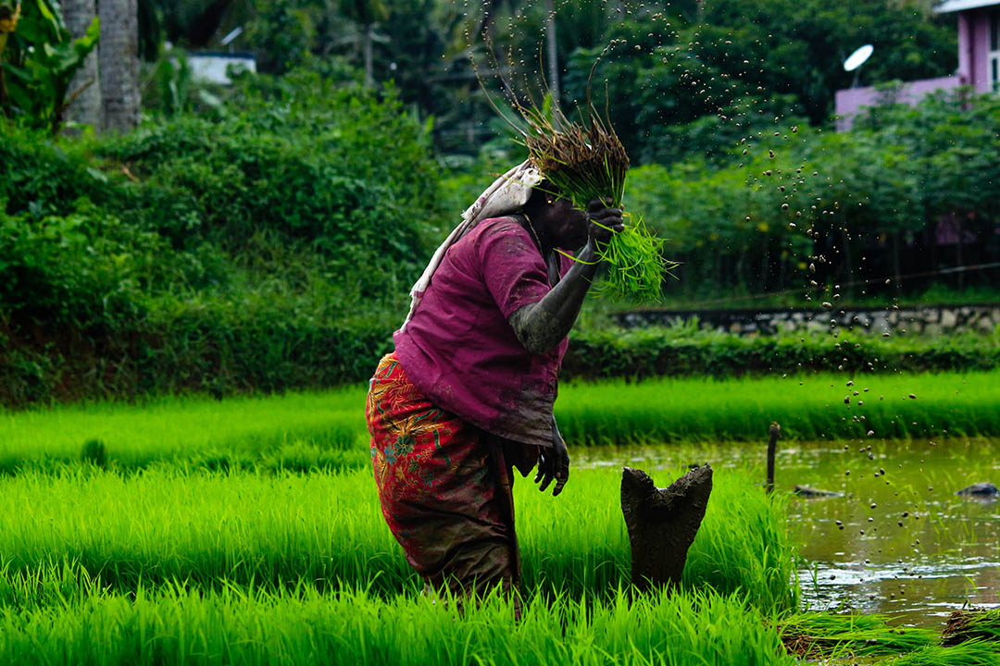
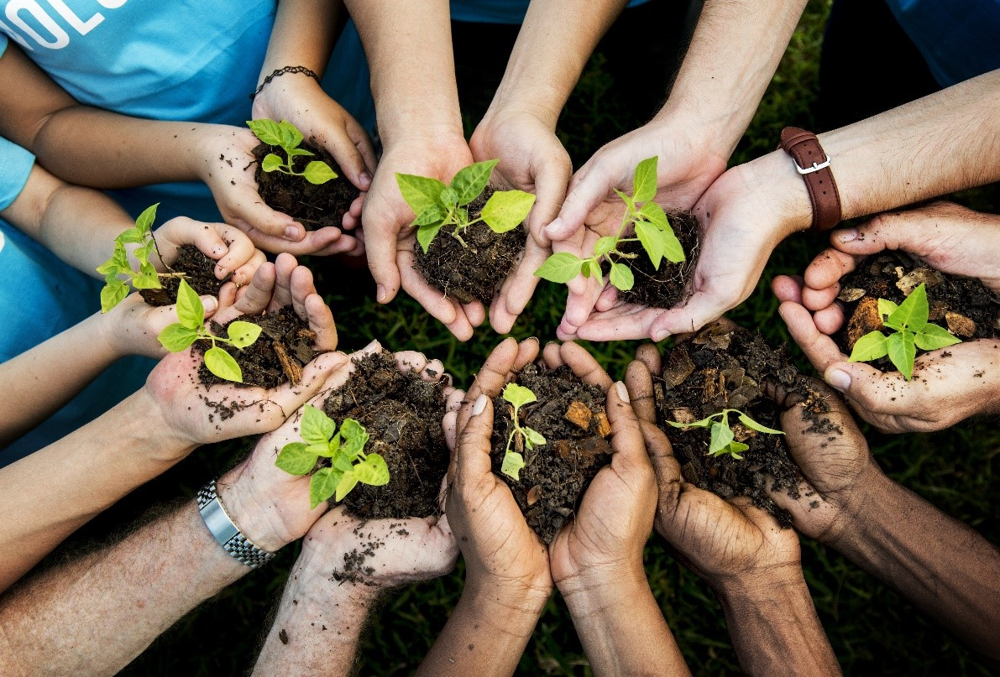

Women and Green Economy

Women’s engagement in the green economy is important for addressing challenges facing the environment and achieving sustainable development. Sustainable development is the type of development that meets the needs of the present generation without compromising the ability of future generations to meet their own needs. Despite the challenges, empowering women and taking into consideration gender-inclusive policies can help in attaining a more sustainable and equitable future. By recognizing and harnessing women’s abilities, society can better maneuver the transition to a more sustainable and greener economy. According to (Popkova, 2022) Green economy is an economy that improves the welfare of the people, provides social justice, and at the same time significantly reduces the risks to the environment and its depletion.
Read more
Green Economy Transition in Kenya and in Africa
In an era marked by the pressing challenges of climate change, resource depletion and environmental degradation, the concept of green economy transition has emerged as a beacon of hope for both Kenya and the wider African continent. The green economy transition represents a fundamental shift in economic paradigms, one that marries economic development with environmental stewardship. In Kenya and across the African continent, this transformative approach seeks to foster a harmonious relationship between nature and economic growth. This introduction sets the stage for an exploration of the dynamic journey towards sustainability in Kenya and the broader African context, where innovative policies, initiatives, and collaborations converge not only to address the environmental challenges of today but also the socio-economic aspirations of tomorrow.
Read more
ESD 2030 Roadmap

The ESD 2030 Roadmap represents a visionary framework for the future of Education for Sustainable Development, outlining strategic directions and objectives to be achieved by the year 2030. This comprehensive roadmap is grounded in the urgent need to address global challenges such as climate change, biodiversity loss, and social inequities through transformative education. By aligning with the United Nations' Sustainable Development Goals, the roadmap seeks to foster a holistic approach to education that empowers learners with the knowledge, skills, and values necessary to contribute meaningfully to a sustainable and equitable world. At its core, the roadmap envisions a paradigm shift in educational systems, advocating for the integration of sustainability principles across all levels and disciplines. It underscores the importance of fostering a culture of lifelong learning, promoting critical thinking, and nurturing a sense of global citizenship.
Read more